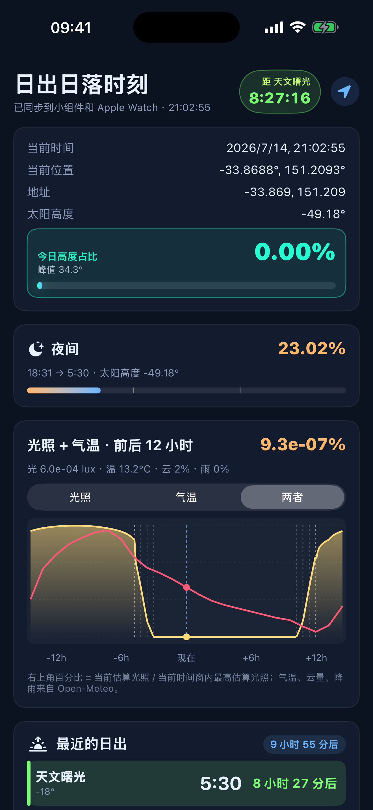

日光轨迹
日出日落、太阳轨迹与自驾天气。为自驾、摄影、露营和观星的人做的太阳工具。
即将上架 App Store iPhone · iPad · Apple Watch 灵动岛 · 小组件
功能
- 日出、日落，以及民用、航海、天文曙光与暮光时间
- 灵动岛与锁屏实时活动，锁屏也能看倒计时
- 桌面和负一屏小组件，Apple Watch 快速查看
- 可旋转、缩放、平移的 3D 太阳轨迹
- 太阳高度、方向与指南针对齐辅助
- 气温、云量、降雨概率、紫外线与光照趋势图表
- 自驾天气、附近补给、道路信息和观星条件辅助
数据与隐私
太阳位置与日出日落由设备本地天文计算完成，不建账号、不投广告、不做追踪。天气与地图数据来自 Open-Meteo、Apple 地图与 OpenStreetMap 等服务，仅供出行和观察规划参考。详见隐私政策。
支持
使用问题请见支持页面，或发送邮件至 huobotao@hotmail.com。
其他 App
- 曙暮：离线计算日出日落与三类曙暮光，支持 iPhone 与 Apple Watch。
- MilkTeaSpace：离线浏览和比较奶茶配方的多维风味空间。